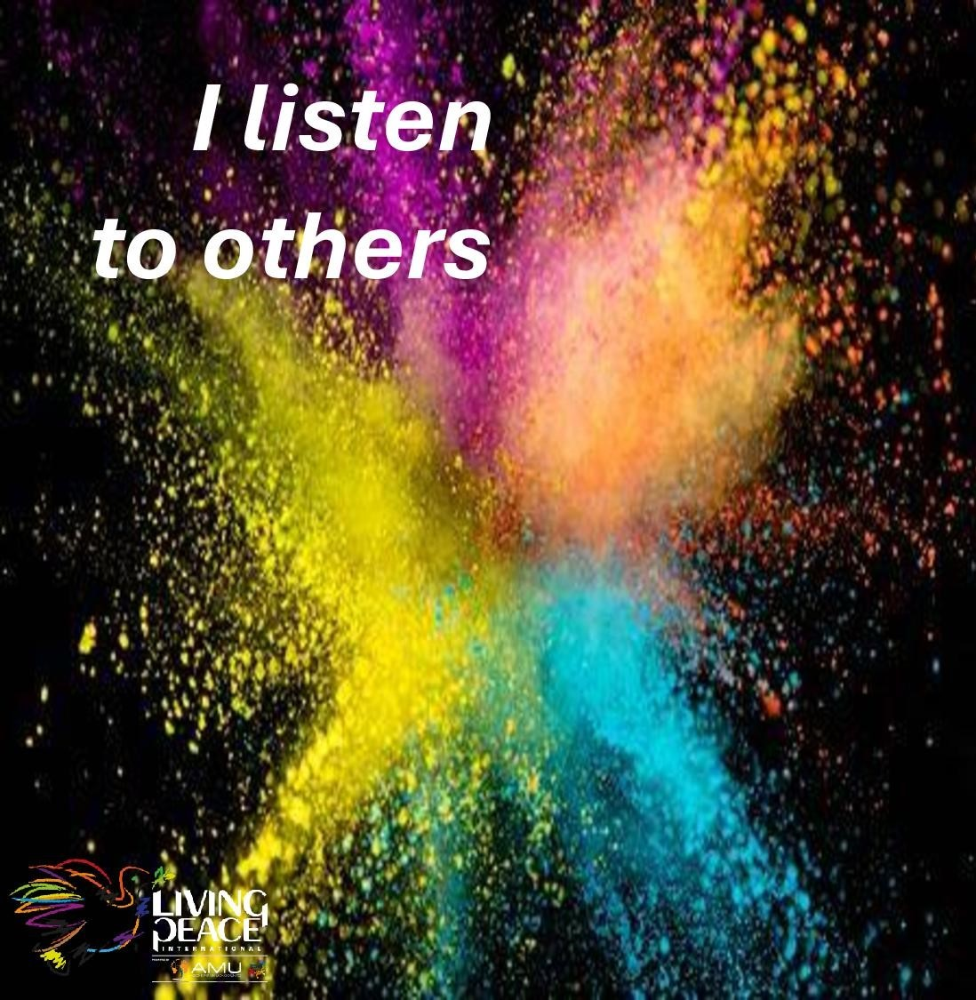

YOUR PEACE GESTURE
I listen to others
Listen with attention and make room for the other person.
TEENS · FOR PEACE
Roll the dice and discover a concrete way to listen, comfort, help, embrace and begin again with courage.

Listen with attention and make room for the other person.
THE SIX SIDES
Choose a card to turn today’s challenge into a real gesture.
“Teen peace grows when listening, comforting and apologizing become brave gestures.”
Listen · Support · Begin again